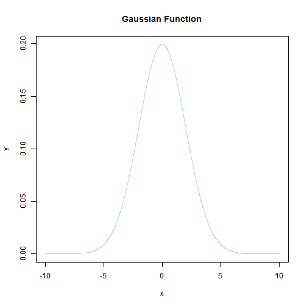

To plot a Gaussian function with the desired mean and sd values, together with two lines plotting the position of the first sd (not shown).
x <- seq(-10,10,length=2000)
y <- dnorm(x,mean=0, sd=2)
plot(x,y, type="l", lwd=1, col='lightblue',main='Gaussian Function')
